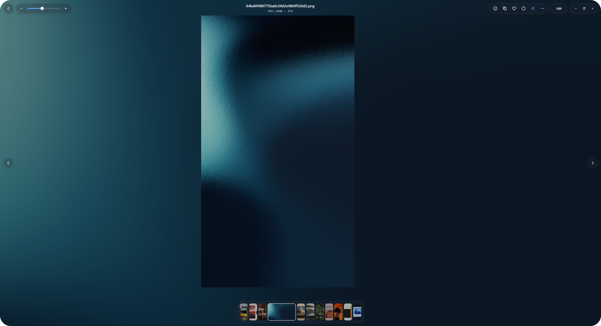

Common
JPEG · PNG · GIF · BMP · TIFF · ICO · WebP · AVIF · HEIC
Native Windows photo viewer
Fast viewing, a calm photo library, and your real folders. No import. No cloud required.

Preview
A short look at browsing, viewing and moving through images without leaving your flow.
Built around the image
VetroLook uses native Windows graphics and image libraries so the interface gets out of the way of the picture.
Quick Look for Explorer
Preview an image right where you are, then keep its folder context when you open it.
Supported formats
JPEG · PNG · GIF · BMP · TIFF · ICO · WebP · AVIF · HEIC
NEF · DNG · CR2 · CR3 · ARW · RAF · RW2 · ORF · PEF
OpenEXR for HDR work, tone-mapped for display.
Native performance
VetroLook stays close to Windows so opening, navigating and inspecting images does not need a browser runtime.
Cold open, RAW preview and library indexing will be published here after stable measurements are available.
Local-first by design
No account. No upload. No analytics. Files remain in the folders you already use.
Open images quickly, zoom and pan smoothly, then move through a folder without losing context.
Build a searchable library directly from files already on your computer. Nothing needs to be imported or uploaded.
Browse photo stacks, inspect EXIF and histograms, work with RAW and modern formats, and drag real files out.
Windows 10 and 11
Windows 10 1809+ or Windows 11. x64 architecture.
Checking latest release
Other formats: EXE · MSIX · Portable